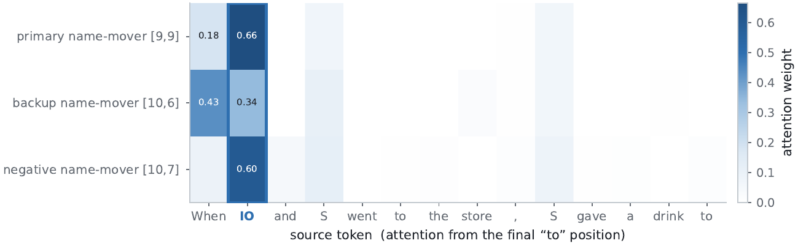
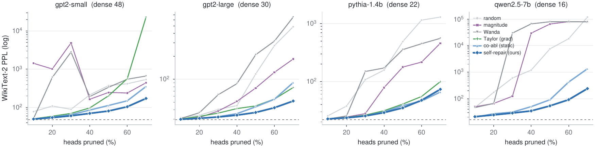

A three-minute tutorial
A narrated, subtitled walkthrough of the problem, the idea, and the results — built from the paper's own figures.
Narrated, with subtitles. Prefer to read? Every scene below expands the same story.
Importance is conditional, not intrinsic
Interpretability scores a component by ablating it in isolation. That view quietly breaks whenever a circuit is redundant: remove a primary component and a dormant backup takes over, so the primary looks unimportant (the model repaired the damage) and the backup looks unimportant too (it was silent all along). A single-ablation score misreads both sides of the redundancy — and attribution, knockout, and pruning inherit the error.
CoAx asks a different question — once the primary circuit is removed, how much does each remaining unit's ablation effect grow? — measured in the output distribution's own (Fisher) metric:
Large for a dormant backup, near zero otherwise — label-free, gradient-free, O(#heads) forward passes.

The first-order blind spot
Every point is one of GPT-2-small's 144 attention heads, by its first-order saliency and its CoAx score. The documented backups (★) hide in the shaded blind spot. Hover a point.

A self-repair module, and the circuit it re-wires


The recovered circuit, drawn four ways
The primary write-path (orange) and the dormant backup path (blue) CoAx recovers, as a functional diagram, a re-wiring, and a token×layer information-flow map.


Why a knockout needs the backups
Ablate the “circuit” a first-order analysis returns and the answer barely moves — the backups silently take over. Click the buttons.
They wake up — and the wake-up is causal



What makes CoAx work, and what it costs


The discovery generalizes, label-free


Recovery and the downstream payoff
Backup recovery on GPT-2 IOI (ROC-AUC)
| score | backup ROC-AUC |
|---|---|
| single ablation 1st | 0.33 |
| attribution patching (AtP) 1st | 0.60 |
| EAP-IG 1st | 0.70 |
| AtP* GradDrop 1st | 0.82 |
| CoAx 2nd | 0.91 |
Every additive / self-repair-aware score falls short; the gap is the node-additive form, not a smarter gradient.


Paper, code, and citation
@inproceedings{gong2026coax,
title = {Conditional Co-Ablation: Recovering Self-Repair Backups in Transformer Circuits},
author = {Gong, Zhiren and Zeng, Zihao and Yuen, Chau and Lim, Wei Yang Bryan},
year = {2026},
note = {Project page: https://gongzhiren.github.io/Conditional-Co-Ablation-website}
}